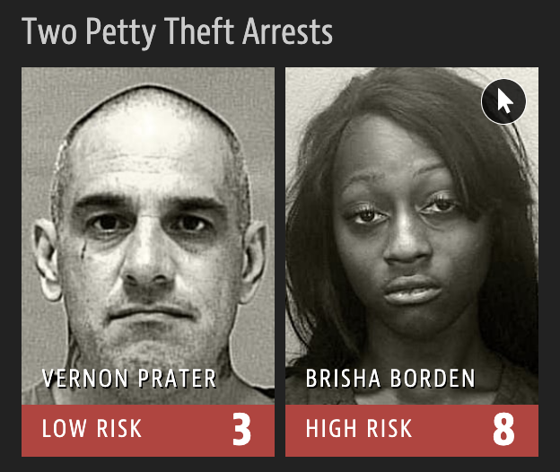
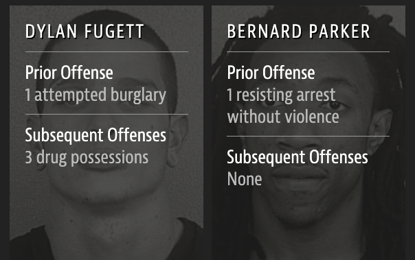

{kind=link}
03:00
Data science ethics
Lecture 13
2024-02-29
OK Cupid data breach
- In 2016, researchers published data of 70,000 OkCupid users—including usernames, political leanings, drug usage, and intimate sexual details
- Researchers didn’t release the real names and pictures of OKCupid users, but their identities could easily be uncovered from the details provided, e.g. usernames
Some may object to the ethics of gathering and releasing this data. However, all the data found in the dataset are or were already publicly available, so releasing this dataset merely presents it in a more useful form.
Researchers Emil Kirkegaard and Julius Daugbjerg Bjerrekær

Gettysburg address
Randomly select 10 words from the Gettysburg Address and calculate the mean number of letters in these 10 words. Submit your answer at bit.ly/bit.ly/gburg-s24.


03:00
Google translate
What might be the reason for Google’s gendered translation? How do ethics play into this situation?

Machine Bias
2016 ProPublica article on algorithm used for rating a defendant’s risk of future crime:
In forecasting who would re-offend, the algorithm made mistakes with black and white defendants at roughly the same rate but in very different ways.
The formula was particularly likely to falsely flag black defendants as future criminals, wrongly labeling them this way at almost twice the rate as white defendants.
White defendants were mislabeled as low risk more often than black defendants.

Risk score errors
What is common among the defendants who were assigned a high/low risk score for reoffending?
 

wru package
Predicting race for 2020Warning: Unknown or uninitialised column: `state`.Proceeding with last name predictions...ℹ All local files already up-to-date! surname pred.whi pred.bla pred.his pred.asi pred.oth
1 Rundel 0.9177967 0 0 0 0.08220329